Select a role to view its heroes, then select a hero to expand their profile.
Tank
D.Mon
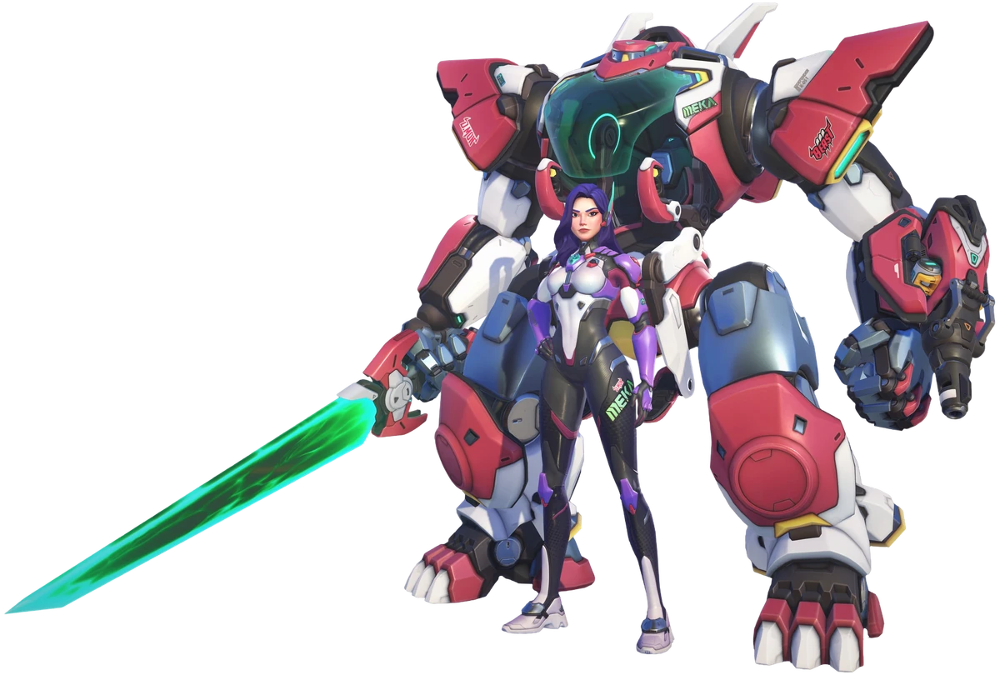
D.Mon is a heroic mech pilot who fights alongside her team using advanced technology and heavy firepower.
Stats
- Role: Tank – Stalwart
- Health: 675 (425 health + 250 armor); pilot 175
Abilities
- Eject!Passive – Eject out of your mech when it is destroyed.
- Plasma SaberWeapon – Fast energy melee weapon.
- Portable Fusion RepeaterWeapon – Heavy machine gun.
- Power BarrierAbility – Hold to deploy a frontal energy barrier.
- Surging StrikeAbility – While Power Barrier is deployed, strike forward to damage and push enemies back.
- Fusion RepeaterAbility – Activate a rapid-fire machine gun.
- PropulsorsAbility – Consume fuel to surge in any horizontal direction.
- Call MechAbility – Reassemble your mech.
- Limit BreakUltimate – Unleash a sweeping slash that grants self overhealth and amplifies damage taken by enemies.
D.Va
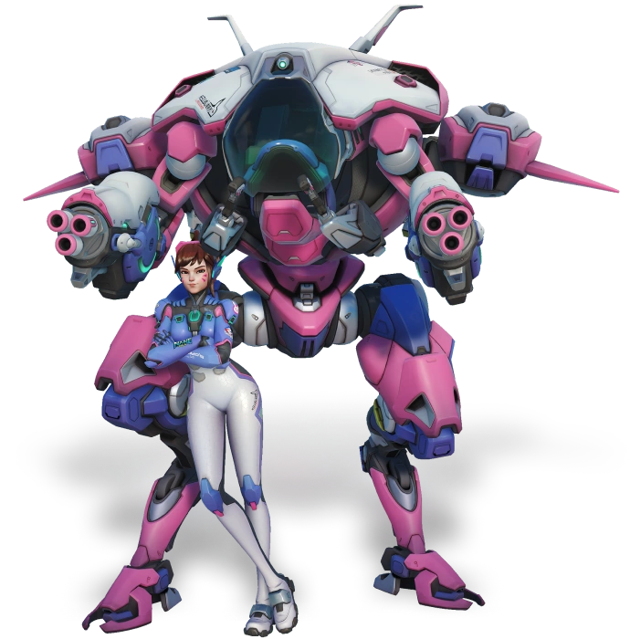
D.Va is a former professional gamer who pilots a powerful combat mech to defend her home.
Stats
- Role: Tank – Initiator
- Health: 675 (350 health + 325 armor); pilot 175
Abilities
- Eject!Passive – Eject out of your mech when it is destroyed.
- Fusion CannonsWeapon – Automatic short-range spread weapons.
- Light GunWeapon – Automatic pilot weapon.
- BoostersAbility – Fly in the direction you are facing.
- Defense MatrixAbility – Block projectiles in an area in front of you.
- Micro MissilesAbility – Launch a volley of explosive rockets.
- Call MechAbility – Call down a new mech.
- Self-DestructUltimate – Eject and overload your mech, causing it to explode after a short time.
Domina
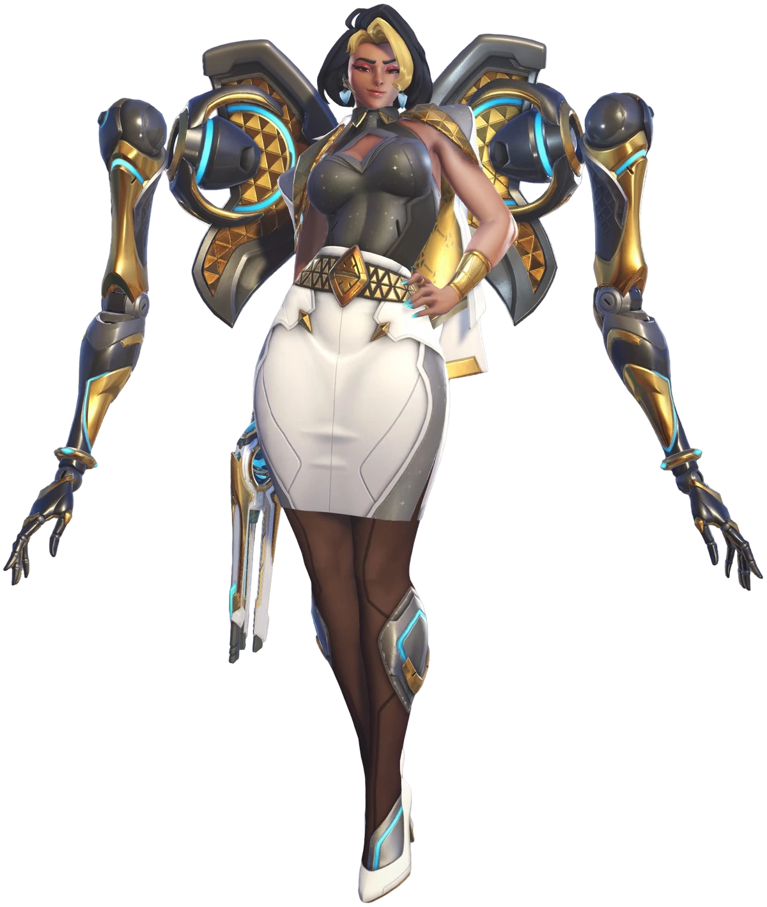
Domina is a powerful hero whose abilities bring new tactical possibilities to the Overwatch battlefield.
Stats
- Role: Tank – Stalwart
- Health: 650 (250 health + 400 shields)
Abilities
- ReconstructionPassive – Dealing damage with abilities restores shields.
- Photon MagnumWeapon – Medium-range beam that culminates in a high impact shot.
- Barrier ArrayAbility – Construct a segmented hard-light barrier; each segment must be destroyed individually.
- Sonic RepulsorsAbility – Push enemies back, stunning them if they hit a wall.
- Crystal ChargeAbility – Project an explosive crystal and reactivate to detonate it.
- PanopticonUltimate – Fire a hard-light barrier that imprisons enemies and detonates on expiration.
Doomfist
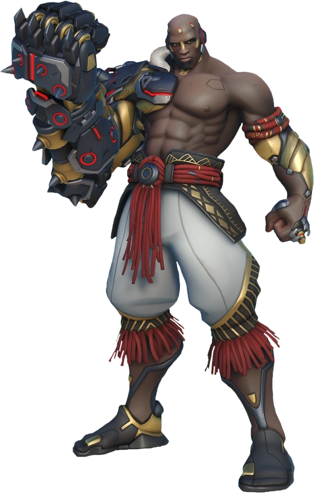
Doomfist is a formidable Talon leader who believes humanity grows stronger through conflict.
Stats
- Role: Tank – Initiator
- Health: 525 health
Abilities
- The Best Defense...Passive – Dealing damage with abilities creates temporary overhealth.
- Hand CannonWeapon – Short-range weapon with spread. Reloads automatically.
- Rocket PunchAbility – Hold to charge, then release to launch forward and knock an enemy back. More damage if they hit a wall.
- Seismic SlamAbility – Leap and smash the ground.
- Power BlockAbility – Protect yourself from frontal attacks. Blocking heavy damage empowers Rocket Punch.
- Meteor StrikeUltimate – Leap up into the air, move the targeting circle, then strike the targeted area.
Hazard
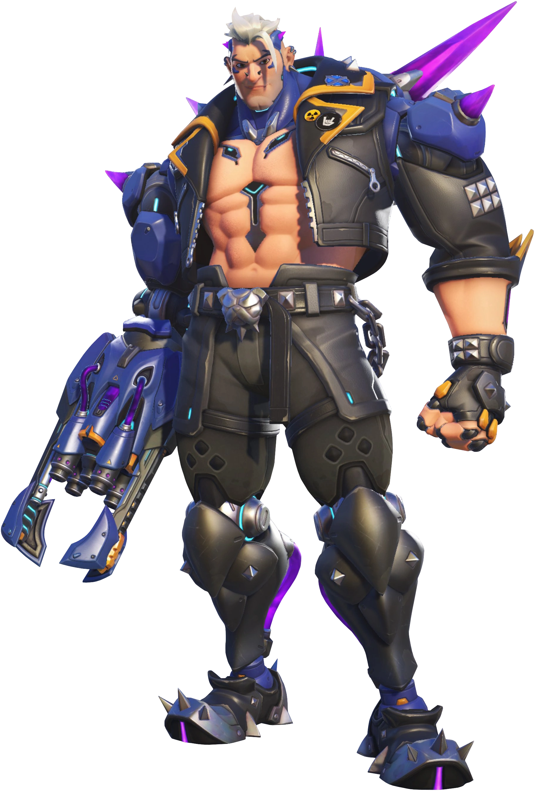
Hazard is a powerful combatant capable of disrupting enemy formations and controlling dangerous engagements.
Stats
- Role: Tank – Initiator
- Health: 650 (425 health + 225 armor)
Abilities
- VaultPassive – Scale short walls and grab ledges.
- BonespurWeapon – Fire a burst of spikes.
- Spike GuardAbility – Protect yourself from frontal damage, firing homing spikes at nearby enemies and regenerating ammo.
- Violent LeapAbility – Lunge forward. Activate again to slash at enemies, knocking them back.
- Jagged WallAbility – Launch a spiked wall that damages and knocks back nearby enemies.
- DownpourUltimate – Rain down a torrent of spikes, immobilizing enemies.
Junker Queen
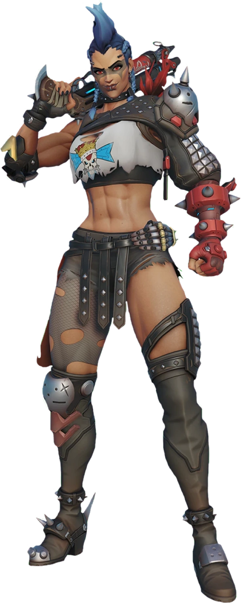
Junker Queen rules over Junkertown and leads her forces with an aggressive style built around close-range combat.
Stats
- Role: Tank – Stalwart
- Health: 575 health
Abilities
- ScattergunWeapon – Pump-action shotgun.
- Jagged BladeWeapon – Throw a blade that wounds, and pull the target toward you.
- Commanding ShoutAbility – Grants temporary health and movement speed to yourself and allies.
- CarnageAbility – Wound all enemies in front of you, dealing damage over time.
- RampageUltimate – Charge forward. Wounds enemies, dealing damage over time and preventing them from being healed.
- Adrenaline RushPassive – Heal from all damage over time dealt by wounds.
Mauga
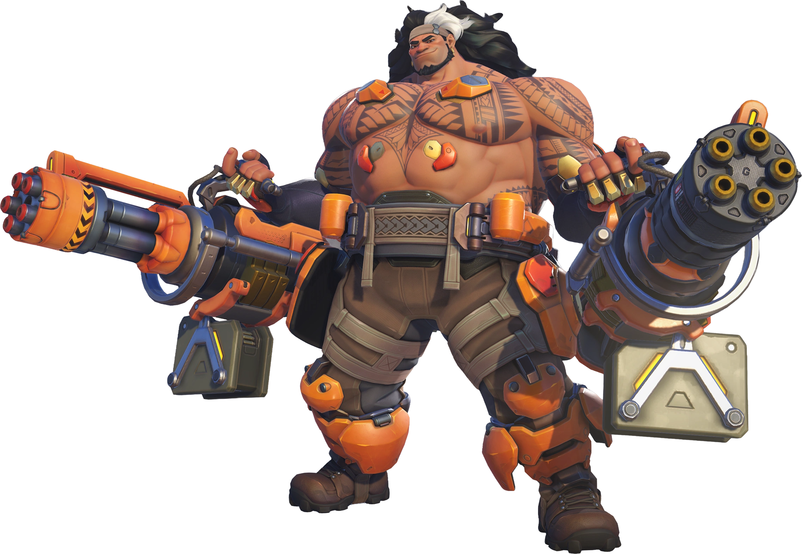
Mauga is a heavily armed Talon operative who charges into battle with twin weapons and overwhelming strength.
Stats
- Role: Tank – Bruiser
- Health: 725 (575 health + 150 armor)
Abilities
- BerserkerPassive – Gain temporary health when dealing critical damage.
- Incendiary ChaingunWeapon – Right-hand chaingun that ignites enemies.
- Volatile ChaingunWeapon – Left-hand chaingun that deals heavy critical damage.
- OverrunAbility – Charge forward and stomp to launch enemies. You are unstoppable while charging.
- Cardiac OverdriveAbility – Gain damage reduction; nearby allies heal themselves by dealing damage.
- Cage FightUltimate – Deploy a barrier that traps yourself and enemies.
Orisa
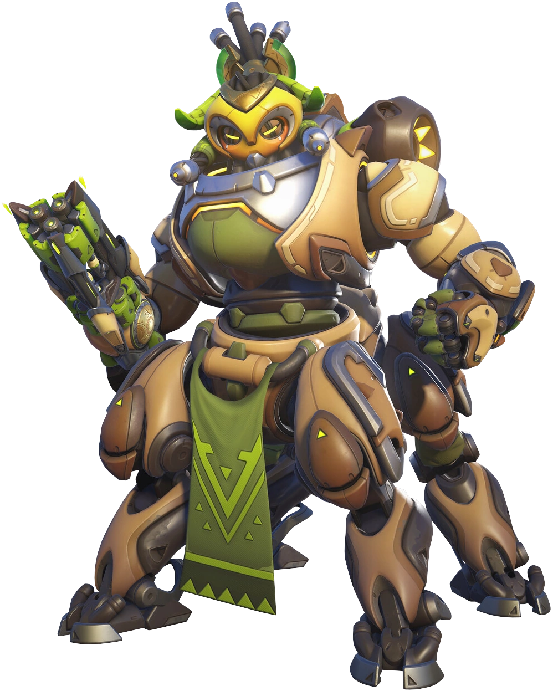
Orisa is a guardian omnic created to defend Numbani and its people from threats.
Stats
- Role: Tank – Bruiser
- Health: 600 (300 health + 300 armor)
Abilities
- Augmented Fusion DriverWeapon – Automatic heat-based weapon.
- Energy JavelinAbility – Launch your javelin to stun and knock back an enemy. Better if they hit a wall.
- FortifyAbility – Gain temporary health, reducing all damage taken and becoming unstoppable.
- Javelin SpinAbility – Spin your javelin to destroy projectiles and block melee, pushing enemies and boosting forward speed.
- Terra SurgeUltimate – Sweep in enemies and anchor down, gaining Fortify while charging a surge of damage.
Ramattra
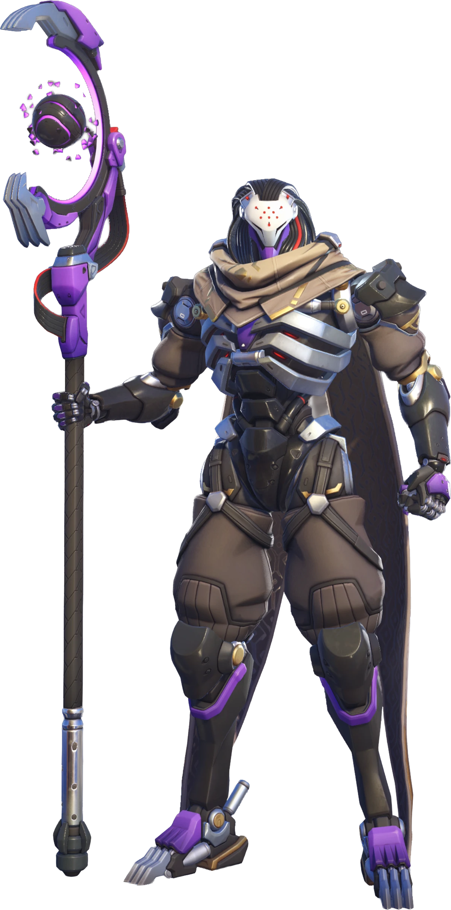
Ramattra is an omnic leader who fights for the future of his people and can switch between powerful forms.
Stats
- Role: Tank – Stalwart
- Health: 525 (425 health + 100 armor; +275 armor in Nemesis Form)
Abilities
- Void Accelerator (Omnic Form)Weapon – Fire a stream of projectiles.
- Void Barrier (Omnic Form)Ability – Create a barrier at the targeted location.
- Nemesis FormAbility – Transform, changing your attacks and gaining bonus armor.
- Pummel (Nemesis Form)Ability – Punch, creating a wave of piercing energy with every swing.
- Ravenous VortexAbility – Fire an energy sphere that slows and pulls down enemies. Reactivate to detonate early.
- AnnihilationUltimate – Enter Nemesis Form and create a deadly swarm that lashes out at nearby enemies.
Reinhardt
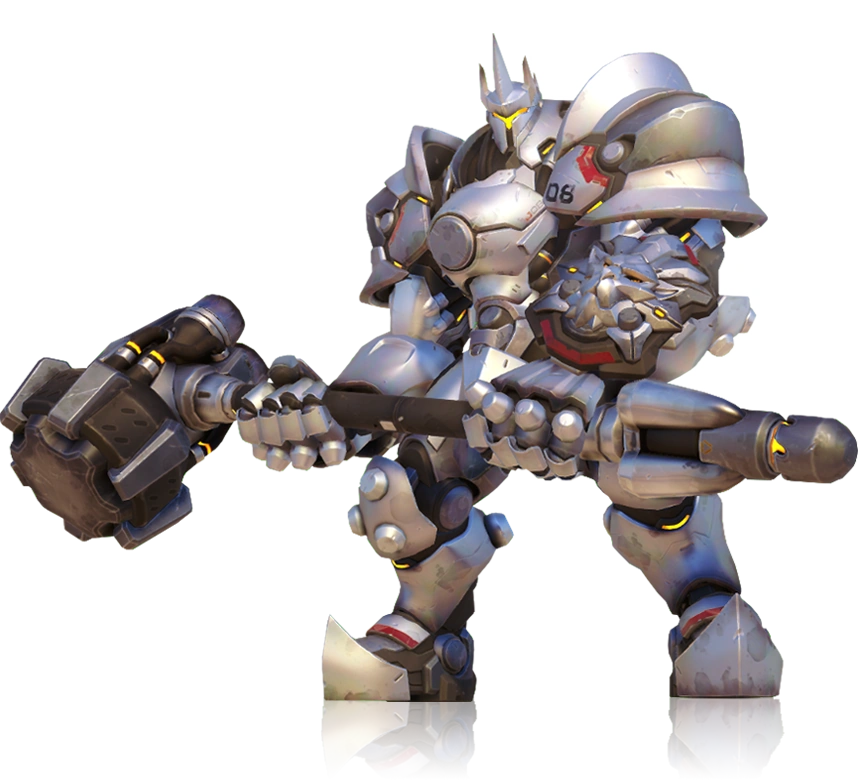
Reinhardt is a legendary crusader who protects his allies behind a massive energy barrier.
Stats
- Role: Tank – Stalwart
- Health: 700 (400 health + 300 armor)
Abilities
- Rocket HammerWeapon – Devastating melee weapon.
- Barrier FieldAbility – Hold to deploy a frontal energy barrier.
- ChargeAbility – Charge forward and smash an enemy against a wall.
- Fire StrikeAbility – Launch a fiery projectile.
- EarthshatterUltimate – Knock down all enemies in front of you.
Roadhog
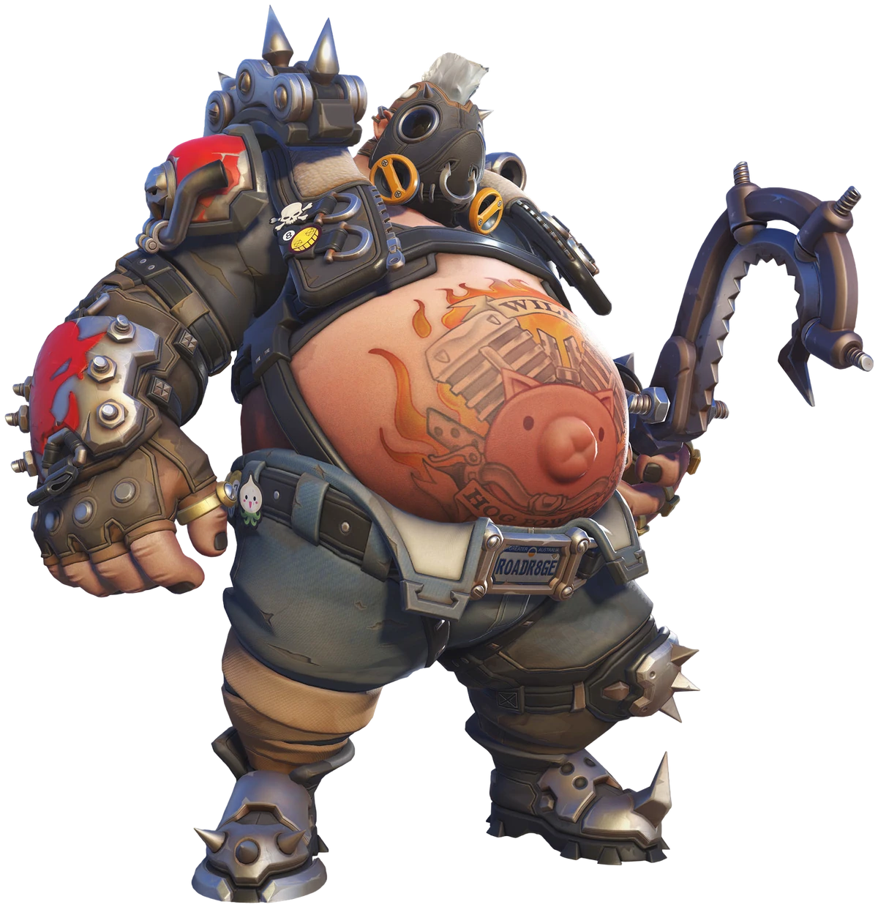
Roadhog is a heavily armed enforcer known for his devastating close-range attacks and signature chain hook.
Stats
- Role: Tank – Bruiser
- Health: 750 health
Abilities
- Scrap GunWeapon – Short-range shotgun that fires in two bursts.
- Trash CompactorAbility – Absorb enemy projectiles, compacting them into an explosive ball of scrap.
- Chain HookAbility – Drag a targeted enemy toward you.
- Take a BreatherAbility – Heal yourself and reduce damage taken.
- Whole HogUltimate – Damage and knock back enemies in front of you.
Sigma
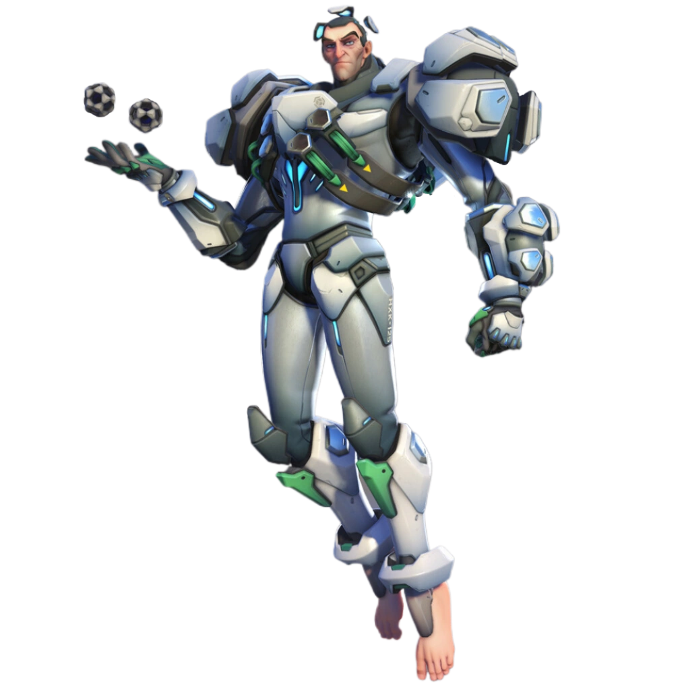
Sigma is a brilliant astrophysicist whose experiments gave him the ability to manipulate gravity.
Stats
- Role: Tank – Stalwart
- Health: 600 (350 health + 250 shields)
Abilities
- HyperspheresWeapon – Launch two charges that implode after a short duration, dealing damage in an area.
- Experimental BarrierAbility – Hold to propel a floating barrier; release to stop. Press again to recall it.
- Kinetic GraspAbility – Absorb projectiles in front of you and convert them into extra health.
- AccretionAbility – Gather debris and throw it at an enemy to knock them down.
- Gravitic FluxUltimate – Manipulate gravity to lift enemies into the air and slam them back down.
Winston
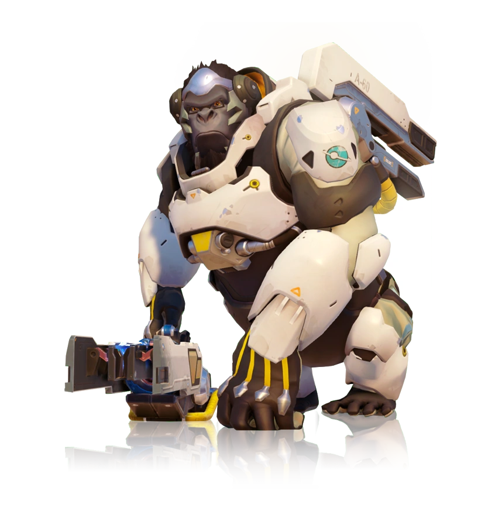
Winston is a brilliant genetically engineered gorilla and scientist who uses advanced technology to protect humanity.
Stats
- Role: Tank – Initiator
- Health: 625 (425 health + 200 armor)
Abilities
- Tesla CannonWeapon – Electric frontal-cone weapon. Hold to charge, release to fire focused electricity.
- Jump PackAbility – Leap forward. Landing on an enemy damages them.
- Barrier ProjectorAbility – Deploy a protective energy dome.
- Primal RageUltimate – Gain immense health, but you can only leap and punch enemies.
Wrecking Ball
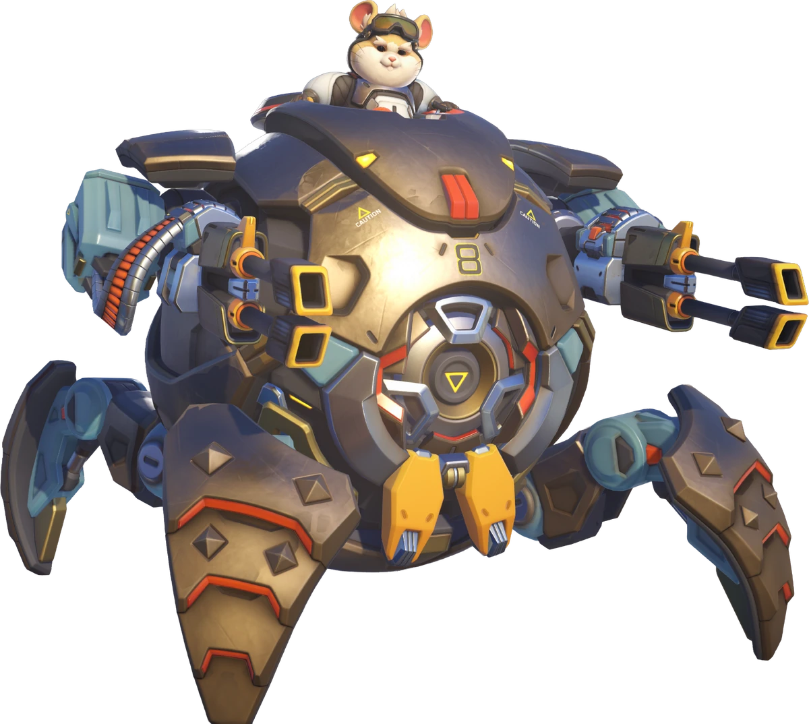
Wrecking Ball is a highly mobile mechanized tank piloted by the genetically engineered hamster Hammond.
Stats
- Role: Tank – Initiator
- Health: 725 (450 health + 125 armor + 150 shields)
Abilities
- Quad CannonsWeapon – Automatic assault weapons.
- Grappling ClawAbility – Swing around rapidly; high-speed collisions damage and knock back enemies.
- RollAbility – Transform into a ball and increase maximum movement speed.
- PiledriverAbility – Slam into the ground to damage and launch enemies upward.
- Adaptive ShieldAbility – Create temporary health that grows with nearby enemies. Some can be given to allies.
- MinefieldUltimate – Deploy a massive field of proximity mines.
Zarya
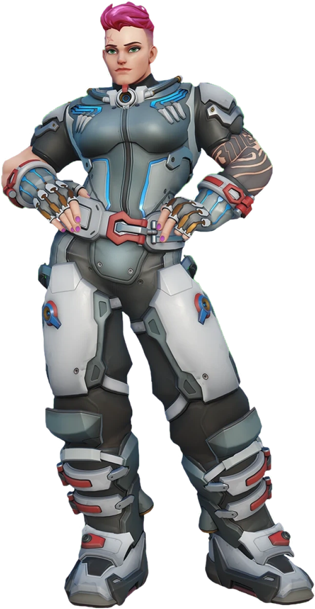
Zarya is a powerful soldier who uses particle technology and protective barriers to strengthen herself and her allies.
Stats
- Role: Tank – Bruiser
- Health: 550 (325 health + 225 shields)
Abilities
- Particle CannonWeapon – Short-range linear beam weapon with an energy grenade launcher.
- Particle BarrierAbility – Project a personal barrier that absorbs damage and builds energy.
- Projected BarrierAbility – Project a barrier onto an ally.
- Graviton SurgeUltimate – Launch a gravity bomb that draws in and traps enemies.
Damage
Anran
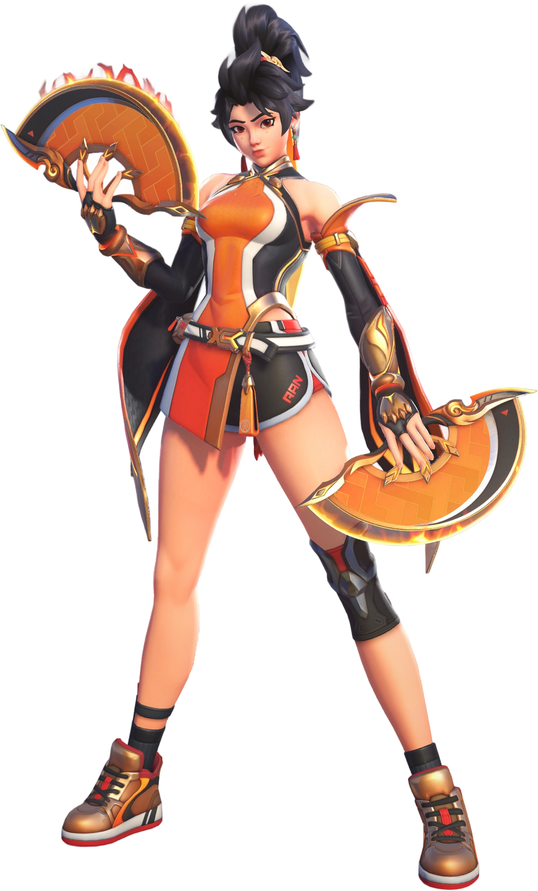
Anran is an Overwatch hero with a unique set of abilities designed for the modern battlefield.
Stats
- Role: Damage – Flanker
- Health: 250 health; 6 m/s base speed
Abilities
- IgnitionPassive – Hit enemies with fire attacks to burn them.
- Zhuque FansWeapon – Hand fans that shoot fiery projectiles.
- Fan the Flames (Secondary Fire)Weapon – Hot wind blast that amplifies burning damage.
- Inferno RushAbility – Propel yourself forward and damage enemies you impact.
- Dancing BlazeAbility – Strike nearby enemies while dodging all damage, healing for each enemy hit.
- Vermillion Ascent (Alive)Ultimate – Charge forward, exploding on impact and instantly igniting enemies.
- Vermillion Revival (Dead)Ultimate – When dead, revive yourself in a fiery explosion.
Ashe
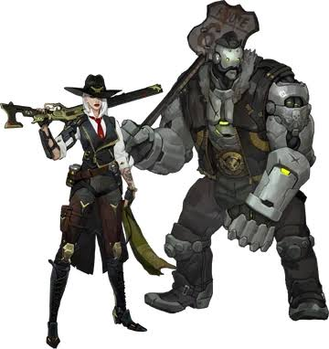
Ashe is the leader of the Deadlock Gang and a skilled outlaw who fights with her rifle and trusted omnic companion, B.O.B.
Stats
- Role: Damage – Sharpshooter
- Health: 250 health
Abilities
- The ViperWeapon – Semi-automatic rifle; aim down sights for a scoped precision shot.
- Coach GunAbility – Blast enemies back and propel yourself away.
- DynamiteAbility – Throw an explosive that can be detonated by shooting it.
- B.O.B.Ultimate – Summon your omnic partner to charge in and fight alongside you.
Bastion
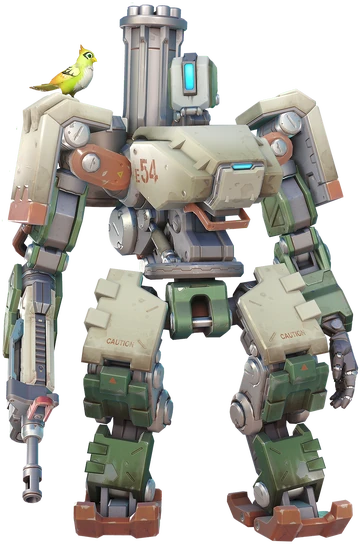
Bastion is a curious combat omnic capable of transforming between different configurations and unleashing heavy firepower.
Stats
- Role: Damage – Specialist
- Health: 350 (250 health + 100 armor)
Abilities
- IroncladPassive – Take reduced damage while in Assault configuration.
- Configuration: ReconWeapon – Mobile submachine gun.
- Configuration: AssaultWeapon – Stationary, heavy-damage minigun.
- A-36 Tactical GrenadeAbility – Launch a bouncing explosive grenade.
- Configuration: ArtilleryUltimate – Deploy and fire long-range artillery shells.
Cassidy
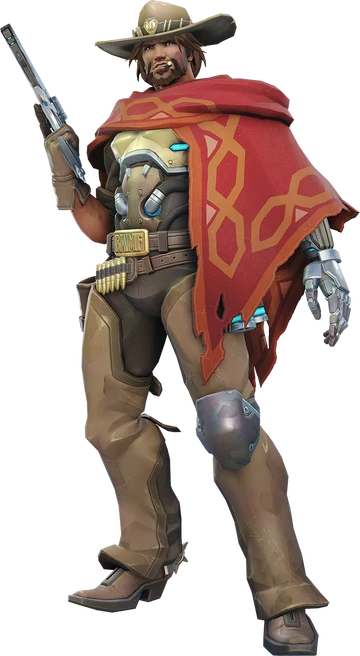
Cassidy is a legendary gunslinger who relies on precision, experience, and his trusty Peacekeeper. (Formerly McCree)
Stats
- Role: Damage – Sharpshooter
- Health: 250 health
Abilities
- PeacekeeperWeapon – Revolver with accurate single shots and a rapid fan-the-hammer secondary.
- Combat RollAbility – Roll in your movement direction and reload.
- FlashbangAbility – Throw a grenade that stuns enemies.
- DeadeyeUltimate – Lock onto targets in view and fire at them all at once.
Echo
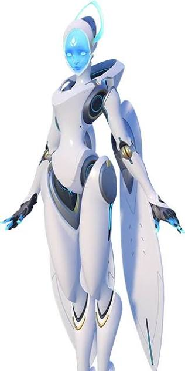
Echo is an advanced adaptive robot capable of copying enemy abilities and rapidly changing her combat role.
Stats
- Role: Damage – Recon
- Health: 225 (150 health + 75 shields)
Abilities
- Tri-ShotWeapon – Fire three projectiles in a burst.
- Sticky BombsAbility – Launch bombs that stick to enemies and detonate.
- Focusing BeamAbility – Beam that deals massive damage to low-health enemies.
- FlightAbility – Fly for a short time.
- DuplicateUltimate – Transform into a copy of a chosen enemy hero, gaining their abilities and ultimate.
Emre
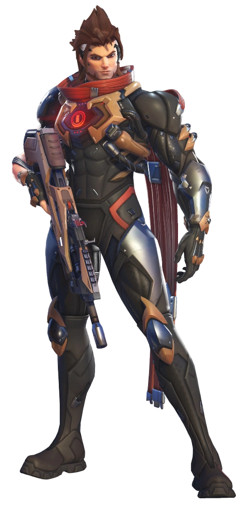
Emre is an Overwatch hero associated with the organization's mysterious history and military operations.
Stats
- Role: Damage – Specialist
- Health: 250 health
Abilities
- Altered VitalsPassive – Passive health regeneration activates sooner and instantly restores 30 health.
- Synthetic Burst RifleWeapon – Three-round burst weapon.
- Take Aim (Secondary Fire)Weapon – Hold to zoom in, tightening accuracy and increasing falloff range.
- Siphon BlasterAbility – Wield a semi-automatic pistol with life-stealing explosive rounds; move faster and jump higher.
- Cyber FragAbility – Throw a grenade that detonates shortly after bouncing.
- Override ProtocolUltimate – Become a living weapon firing rapid explosive blasts or charged mega-shots.
Freja
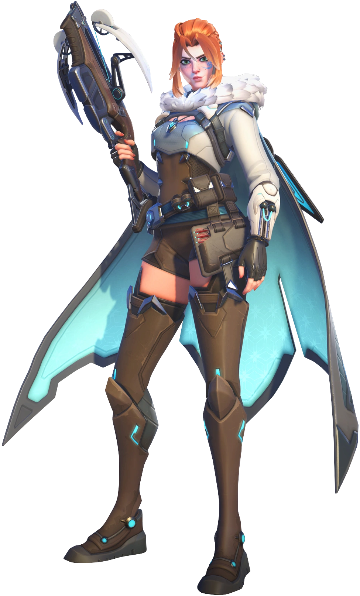
Freja is a highly mobile hunter who brings specialized equipment and precision to the fight.
Stats
- Role: Damage – Recon
- Health: 225 health
Abilities
- Bounty HuntingPassive – Every few Killing Blows grant bonus ultimate charge.
- Revdraw CrossbowWeapon – Rapidly fires automatic bolts.
- Take Aim (Secondary Fire)Weapon – Slow your momentum to fire a high-speed explosive bolt that sticks and detonates.
- Quick DashAbility – Vault in your movement direction and refresh Take Aim.
- UpdraftAbility – Launch upward with a gust of wind.
- Bola ShotUltimate – Fire an explosive bola that wraps up an enemy and pulls in nearby enemies.
Genji
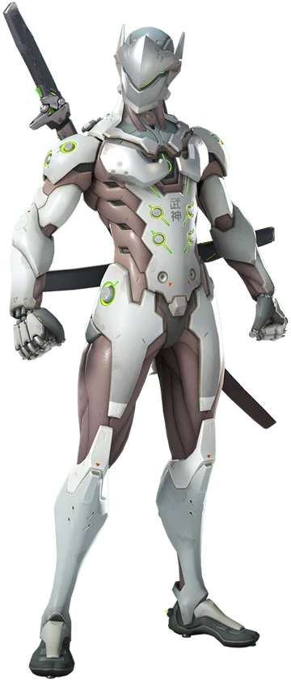
Genji is a cybernetic ninja who uses extraordinary agility and deadly precision to overcome his enemies.
Stats
- Role: Damage – Flanker
- Health: 250 health; 6 m/s base speed
Abilities
- Cyber-AgilityPassive – Climb walls and double jump.
- ShurikenWeapon – Fire three shuriken in rapid succession, or fan them out.
- Swift StrikeAbility – Dash forward, slashing enemies in your path.
- DeflectAbility – Reflect projectiles and block damage with your blade.
- DragonbladeUltimate – Draw your blade for a lethal short-range attack.
Hanzo
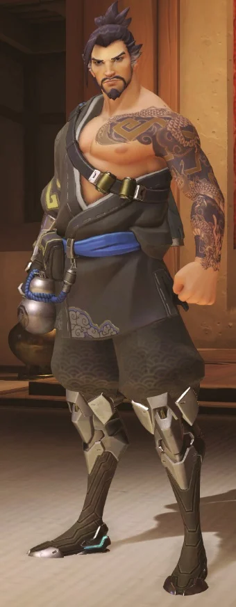
Hanzo is a master archer who combines traditional skills with advanced technology.
Stats
- Role: Damage – Sharpshooter
- Health: 250 health
Abilities
- Storm BowWeapon – Fire arrows; hold to draw back for more speed and damage.
- Sonic ArrowAbility – Fire an arrow that reveals enemies in an area.
- Storm ArrowsAbility – Rapidly fire a volley of arrows.
- LungeAbility – Dash forward in the air.
- DragonstrikeUltimate – Summon a spirit dragon that travels through the air, damaging enemies.
Junkrat
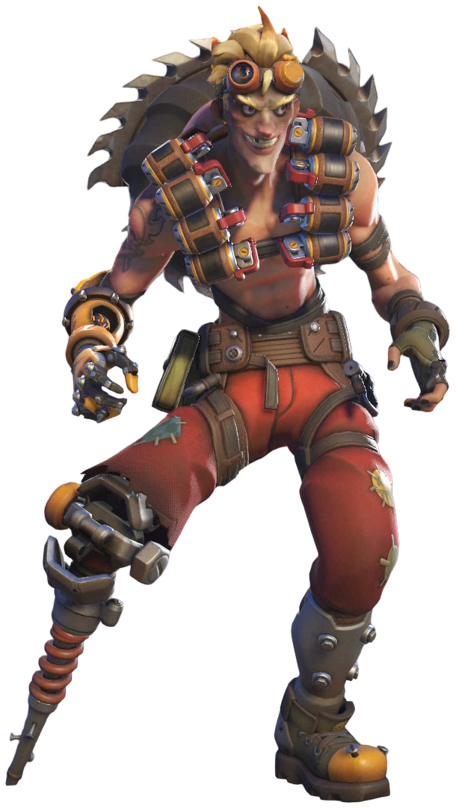
Junkrat is an explosive-obsessed demolitionist who specializes in traps, grenades, and chaotic attacks.
Stats
- Role: Damage – Specialist
- Health: 250 health
Abilities
- Total MayhemPassive – Drop a bunch of live grenades when eliminated.
- Frag LauncherWeapon – Lob grenades that explode on impact or after bouncing.
- Concussion MineAbility – Place a mine that can be detonated to launch enemies or yourself.
- Steel TrapAbility – Drop a trap that immobilizes and damages the first enemy to step in it.
- RIP-TireUltimate – Rev up an explosive tire that you can drive and detonate.
Mei
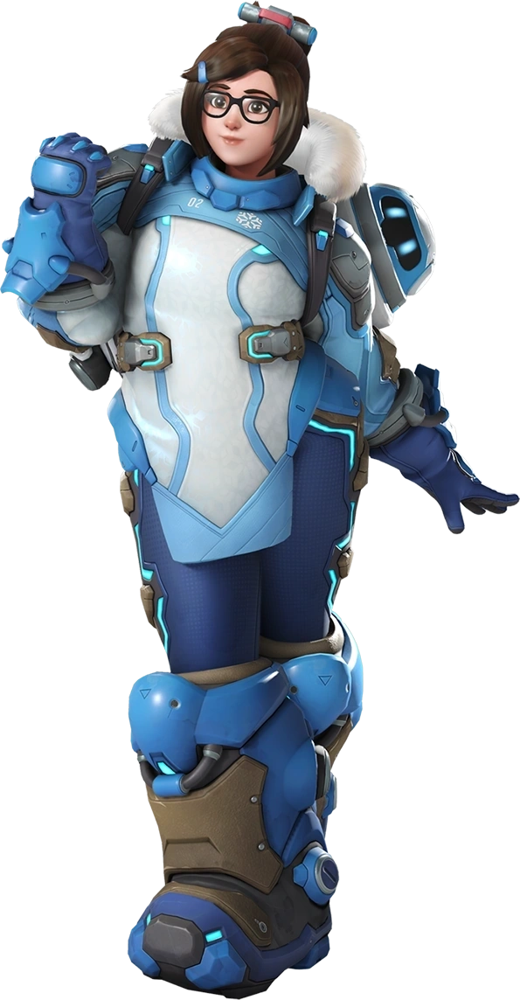
Mei is a climatologist who uses advanced cryogenic technology to manipulate temperature and protect her team.
Stats
- Role: Damage – Specialist
- Health: 300 health
Abilities
- Endothermic BlasterWeapon – Short-range stream that slows and freezes enemies; secondary fires an icicle.
- Cryo-FreezeAbility – Encase yourself in ice, healing and becoming immune to damage.
- Ice WallAbility – Create a wall of ice that blocks and separates.
- BlizzardUltimate – Unleash a snowstorm that slows, damages and freezes enemies.
Pharah
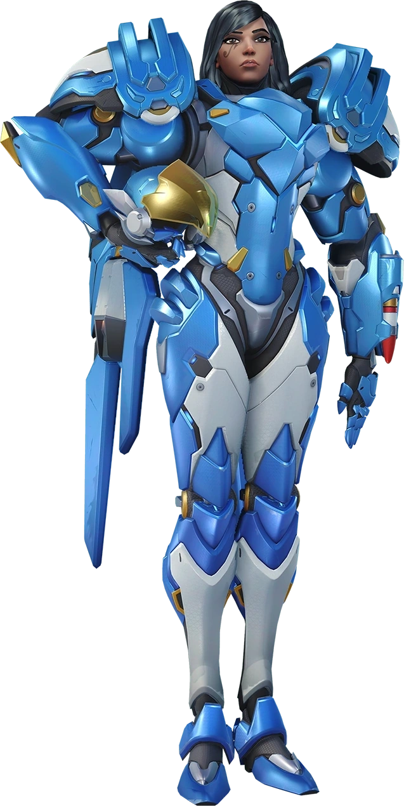
Pharah is a decorated security officer who uses an advanced rocket-powered combat suit to dominate the skies.
Stats
- Role: Damage – Recon
- Health: 225 health
Abilities
- Hover JetsPassive – Hold to hover in the air.
- Rocket LauncherWeapon – Fire explosive rockets.
- Jump JetAbility – Thrust upward.
- Concussive BlastAbility – Fire a blast that knocks enemies back.
- BarrageUltimate – Launch a continuous salvo of mini-rockets.
Reaper
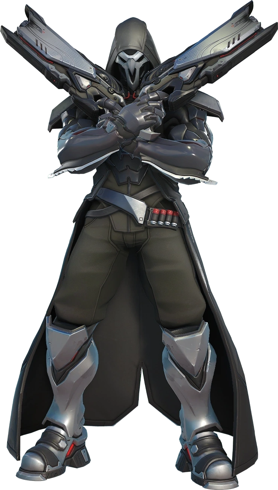
Reaper is a mysterious mercenary capable of becoming incorporeal and dealing devastating close-range damage.
Stats
- Role: Damage – Flanker
- Health: 300 health
Abilities
- The ReapingPassive – Heal for a portion of damage dealt.
- Hellfire ShotgunsWeapon – Dual shotguns that fire powerful blasts.
- Wraith FormAbility – Become immune to damage but unable to fire for a short time.
- Shadow StepAbility – Teleport to a targeted location after a short delay.
- Death BlossomUltimate – Spin and unload both shotguns at nearby enemies.
Shion
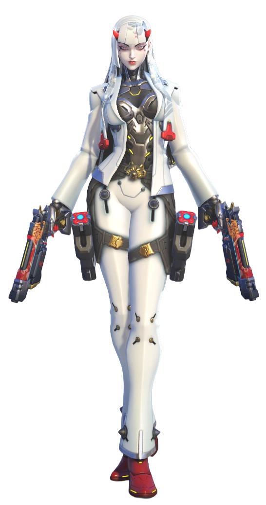
Shion is a dangerous omnic associated with the Hashimoto Clan and brings a fast, aggressive fighting style to Overwatch.
Stats
- Role: Damage – Flanker
- Health: 250 health
Abilities
- Kira PistolsWeapon – Rapid-fire anima pistols.
- ExecutionAbility – Fire an X-shaped volley; hold to tighten its spread.
- EvadeAbility – Dash sideways and briefly gain overhealth.
- MotorcycleAbility – Summon a bike to ride, then fling it at enemies as an explosive.
- Satsuriku SpreeUltimate – Rush forward three times in a storm of gunfire.
Sierra
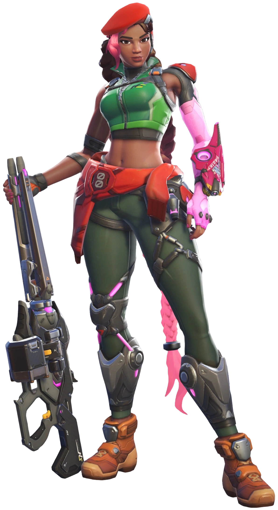
Sierra is an Overwatch hero equipped for high-pressure encounters and tactical battlefield control.
Stats
- Role: Damage – Recon
- Health: 250 health
Abilities
- Helix RifleWeapon – Automatic rifle with a spiral firing pattern that tightens during sustained fire.
- Tracking ShotAbility – Lock-on shot that tracks a target.
- Anchor DroneAbility – Deploy a drone you can grapple to.
- Tremor ChargeAbility – Throw a shockwave grenade.
- TrailblazerUltimate – Deploy a drone that flies forward and carpet bombs the area.
Sojourn
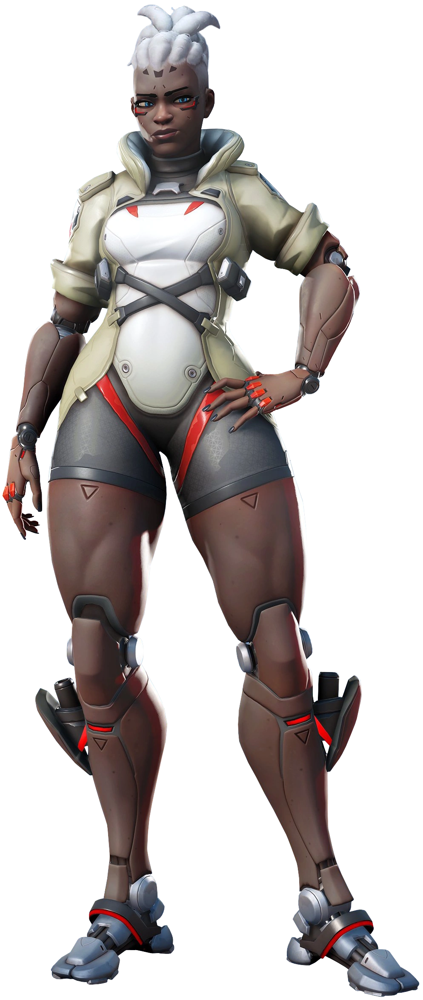
Sojourn is a former Overwatch captain who combines military experience with advanced cybernetic enhancements.
Stats
- Role: Damage – Sharpshooter
- Health: 225 health
Abilities
- RailPassive – Rail charge builds up as you deal damage.
- RailgunWeapon – Rapid-fire energy shots; secondary fires a piercing charged shot.
- Power SlideAbility – Slide forward, then jump higher.
- Disruptor ShotAbility – Fire a projectile that creates a slowing zone.
- OverclockUltimate – Charge your weapon to fire more powerful shots.
Soldier: 76
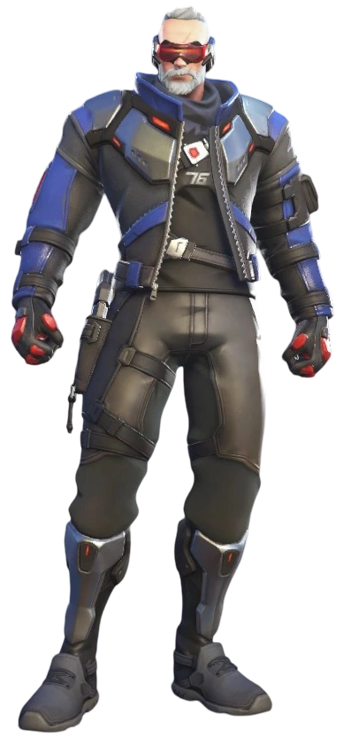
Soldier: 76 is a former Overwatch commander who uses advanced weapons and military tactics to fight his enemies.
Stats
- Role: Damage – Specialist
- Health: 250 health
Abilities
- Heavy Pulse RifleWeapon – Automatic assault rifle.
- Helix RocketsAbility – Fire a burst of rockets.
- SprintAbility – Run faster while not firing.
- Biotic FieldAbility – Deploy a field that heals allies.
- Tactical VisorUltimate – Lock onto enemies automatically while firing.
Sombra
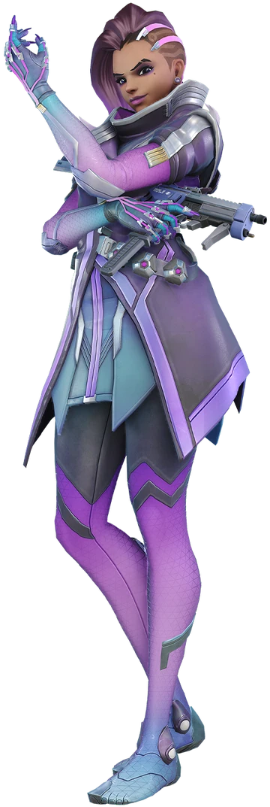
Sombra is an expert hacker who uses stealth and technological disruption to manipulate the battlefield.
Stats
- Role: Damage – Recon (moved to Support / Tactician in Season 5)
- Health: 225 health
Abilities
- ConspiratorPassive – Reveals enemies with a fully charged ultimate.
- Machine PistolWeapon – Short-range automatic weapon.
- HotfixAbility – Heal an ally over time; can also briefly hack health packs and most enemy deployables.
- CyberspaceAbility – Create an area that heals allies and weakens enemies.
- TranslocatorAbility – Throw a beacon and teleport back to it.
- EMPUltimate – Hack enemies in range and damage their shields and barriers.
Symmetra
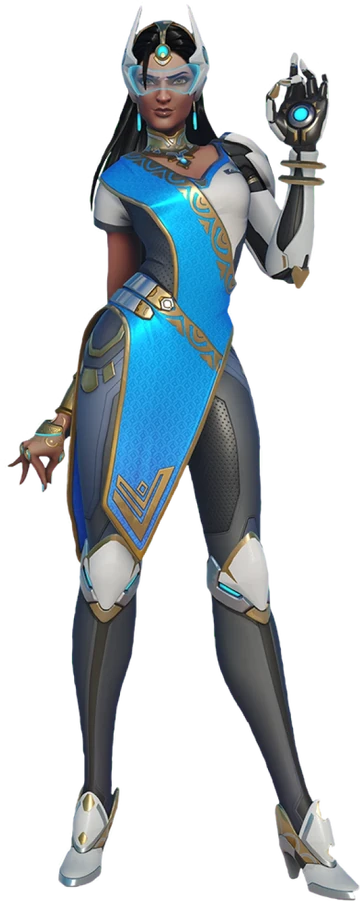
Symmetra is an architect who uses hard-light technology to construct defensive structures and reshape combat spaces.
Stats
- Role: Damage – Specialist
- Health: 275 (125 health + 150 shields)
Abilities
- Photon ProjectorWeapon – Beam weapon that locks on; secondary fires an energy orb.
- Sentry TurretAbility – Deploy turrets that slow nearby enemies.
- TeleporterAbility – Create a teleporter pair that moves your team across the map.
- Photon BarrierUltimate – Project a huge barrier across the map.
Torbjörn
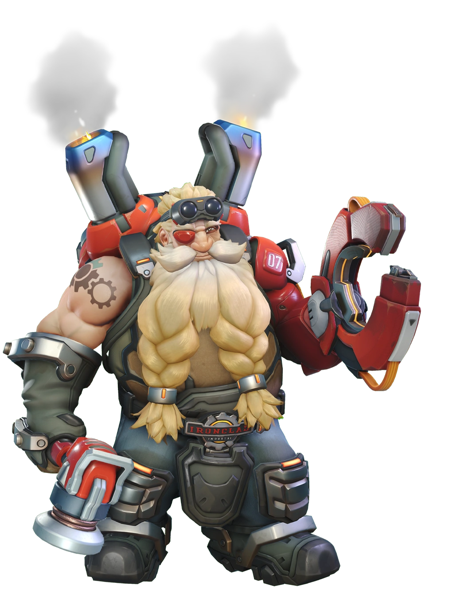
Torbjörn is a master engineer who builds turrets and other defensive technology to support his team.
Stats
- Role: Damage – Specialist
- Health: 300 (225 health + 75 armor)
Abilities
- Rivet GunWeapon – Fire rivets at mid range; secondary fires a close-range blast.
- Forge HammerWeapon – Melee weapon used to build and upgrade.
- Deploy TurretAbility – Build an automated turret that you can upgrade.
- OverloadAbility – Gain extra health and improved attack, movement and reload speed.
- Molten CoreUltimate – Fire a lava-spewing blast and gain bonus armor.
Tracer
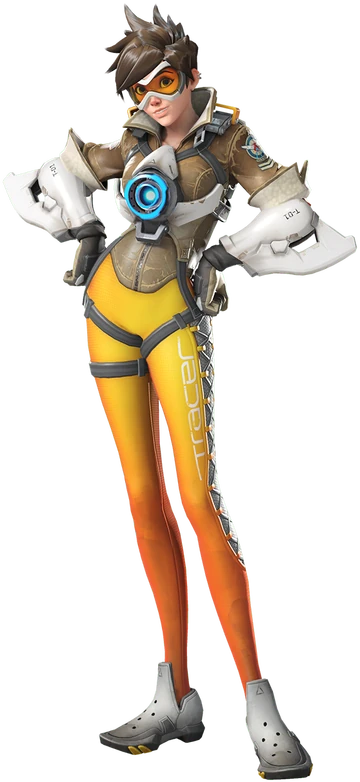
Tracer is a fast-moving Overwatch agent capable of blinking through space and rewinding her personal timeline.
Stats
- Role: Damage – Flanker
- Health: 175 health; 6 m/s base speed
Abilities
- Pulse PistolsWeapon – Dual rapid-fire pistols.
- BlinkAbility – Teleport a short distance in your movement direction.
- RecallAbility – Rewind your health, ammo and position a few seconds back.
- Pulse BombUltimate – Throw a large sticky bomb that deals massive damage.
Vendetta
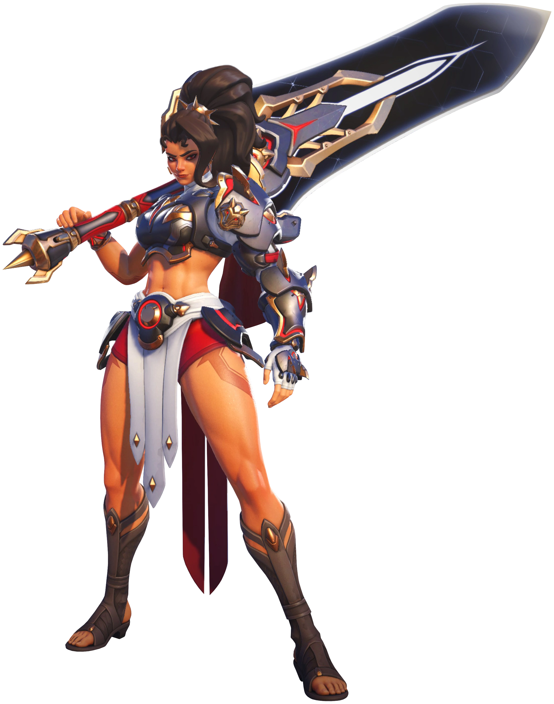
Vendetta is a formidable hero who brings specialized combat abilities and a distinctive fighting style to the roster.
Stats
- Role: Damage – Flanker
- Health: 275 (200 health + 75 armor)
Abilities
- Palatine FangWeapon – Hard-light greatsword. Combo swings to end with a destructive overhead slash.
- Warding StanceAbility – Block with your sword, reducing frontal damage and deflecting melee. Blocking depletes energy.
- Whirlwind DashAbility – Rush forward into a circular slash.
- Soaring SliceAbility – Hurl your sword and then fly to it.
- Projected EdgeAbility – While in Warding Stance, consume energy to fire a wide projectile.
- Sundering BladeUltimate – Cleave through most defenses, dealing severe damage to enemies in front of you.
Venture
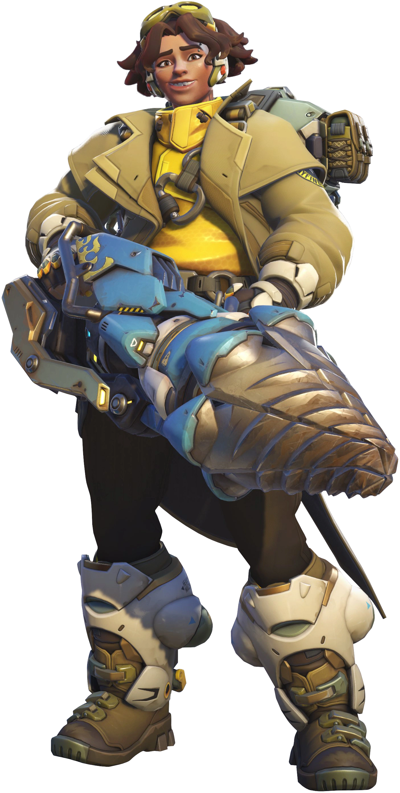
Venture is an adventurous archaeologist who uses advanced excavation technology to burrow through the battlefield. Hes also knows as a bum.
Stats
- Role: Damage – Flanker
- Health: 250 health
Abilities
- Explorer's ResolvePassive – Using abilities grants temporary shields.
- Smart ExcavatorWeapon – Fire a drill-powered projectile; secondary is an explosive blast.
- BurrowAbility – Dig underground and emerge with a knock-up.
- Drill DashAbility – Drill forward at high speed.
- ClobberAbility – Slam your drill into the ground and knock back enemies.
- Tectonic ShockUltimate – Slam the ground, sending a destructive shockwave through the area.
Widowmaker
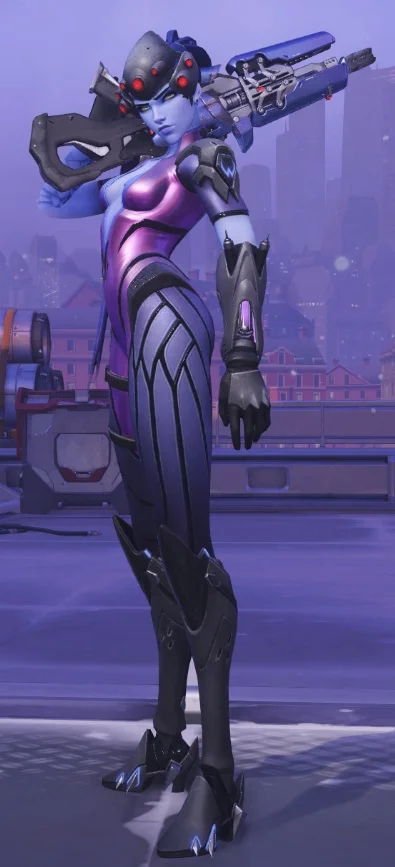
Widowmaker is an elite sniper who eliminates targets from extreme distances with deadly precision.
Stats
- Role: Damage – Sharpshooter
- Health: 225 health
Abilities
- Widow's KissWeapon – Automatic rifle; secondary mode is a scoped sniper shot.
- Grappling HookAbility – Fire a hook to swing to a surface.
- Venom MineAbility – Place a mine that poisons enemies who trigger it.
- Infra-SightUltimate – Reveal enemies through walls to you and your team.
Support
Ana
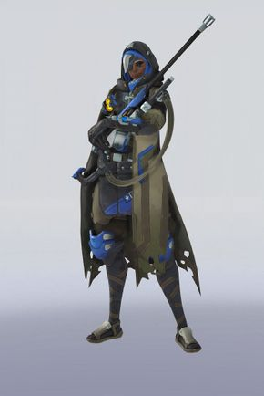
Ana is a veteran sniper and founding member of Overwatch who supports her allies from long range.
Stats
- Role: Support – Tactician
- Health: 250 health
Abilities
- Biotic RifleWeapon – Scoped rifle that heals allies and damages enemies.
- Sleep DartAbility – Put an enemy to sleep for a short time.
- Biotic GrenadeAbility – Heal allies and damage enemies in an area; stops enemy healing.
- Nano BoostUltimate – Boost an ally with extra damage and damage reduction.
Baptiste
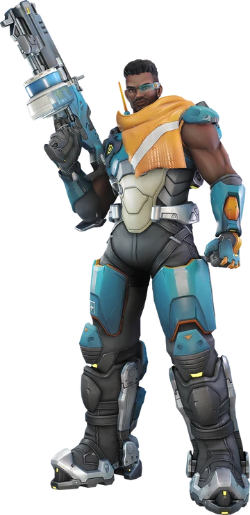
Baptiste is an elite combat medic equipped with experimental weapons and technology that help keep his allies alive.
Stats
- Role: Support – Tactician
- Health: 250 health
Abilities
- Biotic LauncherWeapon – Burst rifle; secondary lobs a healing grenade.
- Regenerative BurstAbility – Heal yourself and nearby allies over time.
- Immortality FieldAbility – Deploy a device that prevents allies from dying.
- Amplification MatrixUltimate – Create a window that doubles damage and healing of projectiles passing through.
Brigitte
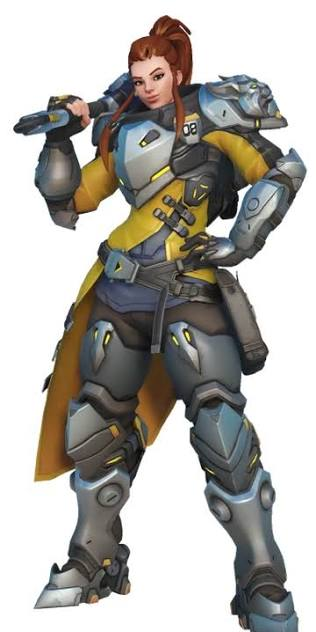
Brigitte is a battle-hardened engineer who fights on the front line while protecting and supporting her teammates.
Stats
- Role: Support – Survivor
- Health: 250 (175 health + 75 armor)
Abilities
- InspirePassive – Dealing damage heals nearby allies.
- Rocket FlailWeapon – Extended-reach melee weapon.
- Repair PackAbility – Throw a healing pack to an ally.
- Whip ShotAbility – Fling your flail to knock an enemy back.
- Barrier ShieldAbility – Deploy a frontal energy barrier.
- Shield BashAbility – Dash forward and stun an enemy.
- RallyUltimate – Gain armor, empower Barrier Shield and give nearby allies extra health.
Illari
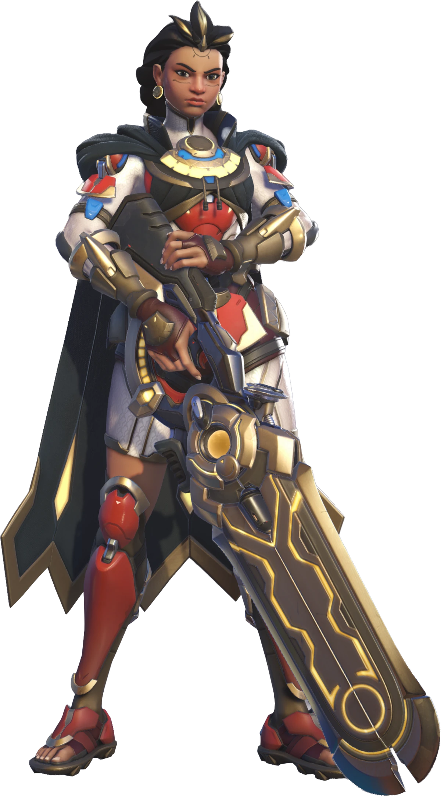
Illari is a powerful warrior who channels solar energy through advanced weaponry.
Stats
- Role: Support – Survivor
- Health: 250 health
Abilities
- Solar RifleWeapon – Fires solar bolts that damage enemies; secondary heals allies.
- Healing PylonAbility – Deploy a pylon that heals allies.
- OutburstAbility – Leap and knock back enemies.
- Captive SunUltimate – Launch a solar orb that explodes and damages enemies.
Jetpack Cat
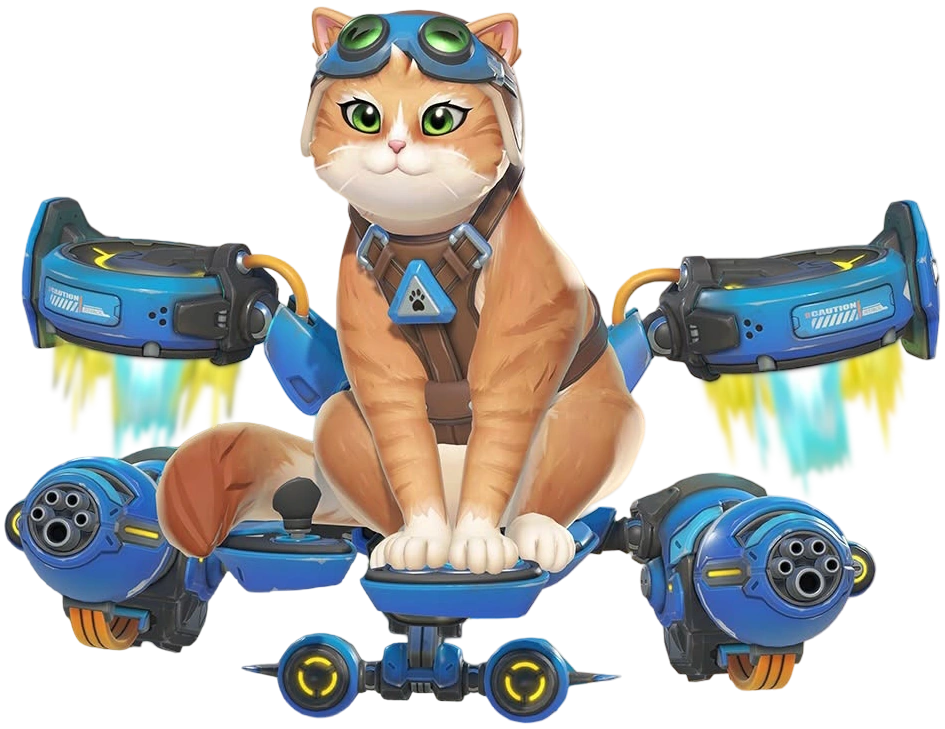
Jetpack Cat is a highly mobile hero known for using aerial movement to navigate the battlefield.
Stats
- Role: Support – Tactician
- Health: 200 health
Abilities
- JetpackPassive – Permanent flight.
- Biotic PawjectilesWeapon – Mid-range projectile spread that heals allies and damages enemies.
- LifelineAbility – Toggle into transport mode, allowing an ally to be towed. Increases speed and heals your ally.
- Frenetic FlightAbility – Accelerate in your movement direction. Fuel recovers slower while carrying another player.
- PurrAbility – Pulsing area heal that increases in frequency over time. Knocks back nearby enemies.
- CatnapperUltimate – Dive towards a ground location, knocking down enemies and tethering the nearest one to you.
Juno
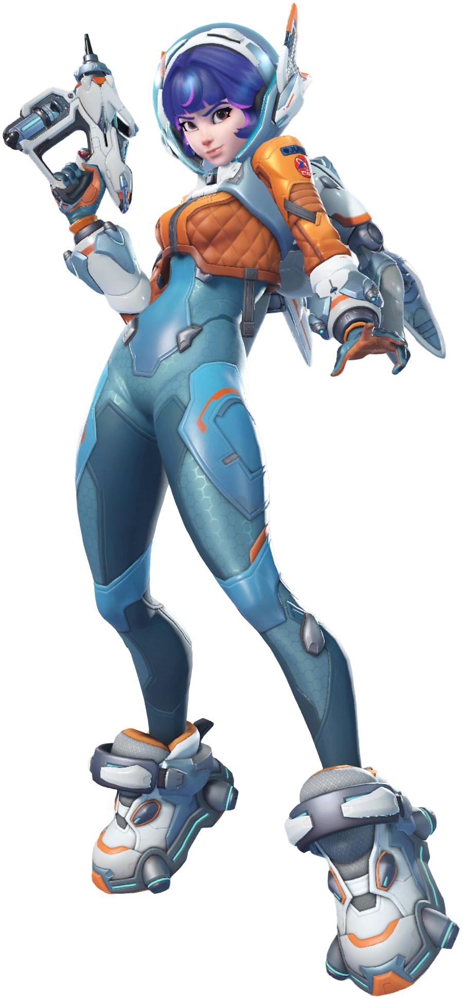
Juno is a highly mobile support hero equipped with technology designed to aid allies while navigating the battlefield.
Stats
- Role: Support – Survivor
- Health: 225 (75 health + 150 shields)
Abilities
- Glide BoostPassive – Flying movement boost.
- MediblasterWeapon – Fire healing projectiles at allies and damage enemies.
- Pulsar TorpedoesAbility – Fire torpedoes that damage enemies and heal allies.
- Hyper RingAbility – Create a ring that boosts the speed of allies passing through.
- Orbital RayUltimate – Beam that heals allies and boosts their damage inside.
Kiriko
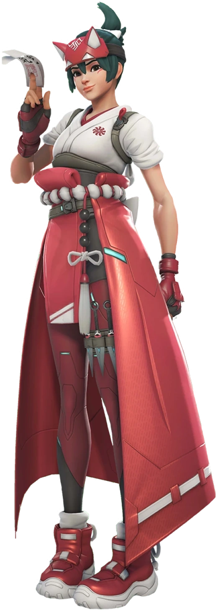
Kiriko is a shrine protector who combines spiritual abilities with exceptional agility and kunai combat.
Stats
- Role: Support – Medic
- Health: 250 health
Abilities
- Healing OfudaWeapon – Throw talismans that heal allies.
- KunaiWeapon – Throw kunai that deal high damage on headshots.
- Swift StepAbility – Teleport to an ally.
- Protection SuzuAbility – Ring a bell that cleanses and makes allies briefly invulnerable.
- Kitsune RushUltimate – Summon a fox spirit that speeds up allies and their cooldowns.
Lifeweaver
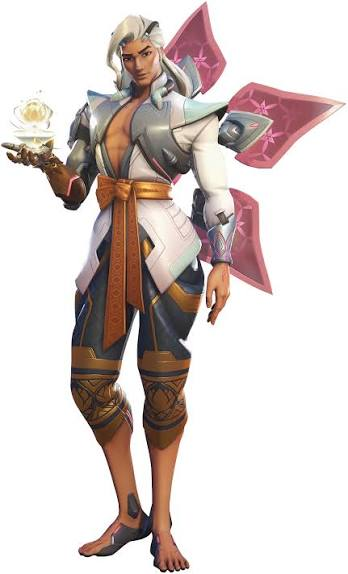
Lifeweaver is a brilliant scientist who uses biolight technology to heal and reposition his allies.
Stats
- Role: Support – Medic
- Health: 250 (200 health + 50 shields)
Abilities
- Thorn VolleyWeapon – Fire thorns at enemies.
- Healing BlossomWeapon – Charge a blossom that heals an ally.
- Petal PlatformAbility – Summon a platform that lifts allies.
- Life GripAbility – Pull an ally to safety.
- Rejuvenating DashAbility – Dash and heal over time.
- Tree of LifeUltimate – Plant a tree that heals nearby allies.
Lúcio
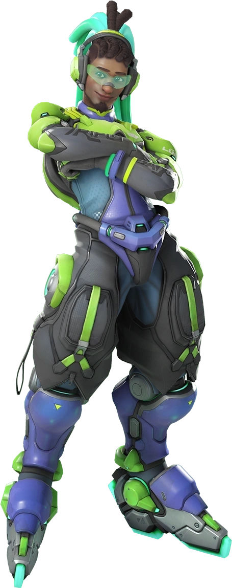
Lúcio is a Brazilian freedom fighter and musician who uses sound technology to heal and empower his teammates.
Stats
- Role: Support – Tactician
- Health: 225 health
Abilities
- Sonic AmplifierWeapon – Fires sonic projectiles; secondary blasts enemies back.
- CrossfadeAbility – Switch between healing and speed auras.
- Amp It UpAbility – Boost the effect of your current aura.
- SoundwaveAbility – Knock enemies back with a sonic blast.
- Sound BarrierUltimate – Create temporary extra health for nearby allies.
Mercy
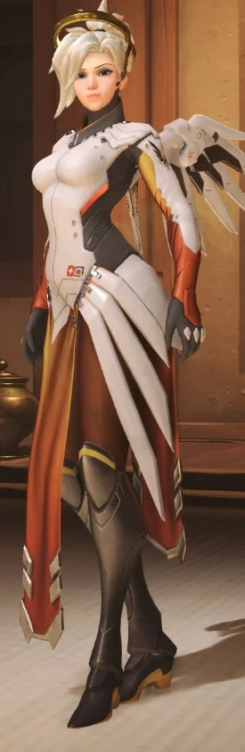
Mercy is a renowned combat medic who uses advanced technology to heal, enhance, and revive her allies.
Stats
- Role: Support – Medic
- Health: 225 health
Abilities
- Angelic DescentPassive – Slowly descend while falling.
- Caduceus StaffWeapon – Beam that heals or boosts damage of allies.
- Caduceus BlasterWeapon – Sidearm pistol.
- Guardian AngelAbility – Fly to a targeted ally.
- ResurrectAbility – Revive a fallen ally.
- ValkyrieUltimate – Gain flight and enhanced abilities.
Mizuki
Mizuki is a modern Overwatch hero bringing new abilities and tactical options to the roster.
Stats
- Role: Support – Survivor
- Health: 250 health
Abilities
- Remedy AuraPassive – Heals nearby allies; scales with resources from dealing damage and healing.
- Spirit GlaiveWeapon – Throw a spinning blade that bounces off walls and rapidly damages enemies.
- Healing KasaAbility – Throw your hat to heal an ally, bouncing to nearby allies and healing you on return.
- Katashiro ReturnAbility – Leap forward leaving a paper doll; reactivate to return with increased speed.
- Binding ChainAbility – Launch a chain that hinders the first enemy hit.
- Kekkai SanctuaryUltimate – Create a sanctuary that heals allies and absorbs enemy projectiles from outside.
Moira
Moira is a brilliant but controversial geneticist who uses experimental technology to drain and restore biological energy.
Stats
- Role: Support – Medic
- Health: 225 health
Abilities
- Biotic GraspWeapon – Beam that heals allies or damages enemies.
- Biotic OrbAbility – Launch an orb that heals or damages in an area.
- FadeAbility – Teleport a short distance, becoming briefly invulnerable.
- CoalescenceUltimate – Beam that heals allies and damages enemies in a line.
Wuyang
Wuyang is a water-focused hero whose abilities provide unique battlefield control and support options.
Stats
- Role: Support – Survivor
- Health: 225 health
Abilities
- Xuanwu StaffWeapon – Fire a damaging water orb. Hold to control its trajectory and empower its explosion.
- Restorative StreamAbility – Place a passive healing stream on an ally; hold to heal manually at an improved rate.
- Rushing TorrentAbility – Ride water to move faster and jump higher.
- Guardian WaveAbility – Send a water wave forward that increases healing received by allies and knocks back enemies.
- Tidal BlastUltimate – Protect an ally or yourself with water that detonates, knocking down enemies and massively healing the host.
Zenyatta
Zenyatta is an omnic monk who seeks harmony and uses mysterious orbs to heal allies and weaken enemies.
Stats
- Role: Support – Tactician
- Health: 250 (75 health + 175 shields)
Abilities
- Orb of DestructionWeapon – Fire energy orbs at enemies.
- Orb of HarmonyAbility – Attach an orb that heals an ally.
- Orb of DiscordAbility – Attach an orb that makes an enemy take more damage.
- TranscendenceUltimate – Become invulnerable and heal nearby allies.